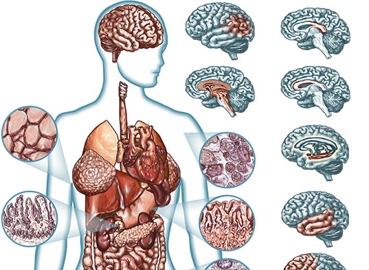
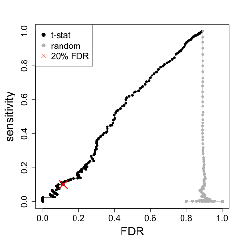

Hierarchical Modeling for RNA-seq
Michael Love
Dept of Biostatistics
Dept of Genetics
DNA => RNA


Why measure RNA:
molecular phenotype

Why measure RNA:
tissue diversity

Why measure RNA:
tissue diversity

Why measure RNA:
within tissue over time

Why measure RNA:
discover disease sub-types

Perou, et al. Molecular portraits of human breast tumours (2000)
Step back: pre-sequencing
- Before sequencing was microarray
- Signal was captured light (positive, "continuous")


Motivating problem
- Measure gene expression for N genes, and M samples
- log of gene expression values are in a tall matrix X
- log here is convenient because gene expression is non-negative and has a long tail
- 2 equal sized groups of samples A and B
\[ \begin{align} X_{ij} &\sim N(\mu_{ij}, \sigma_i) \\ \mu_{ij} &= \mu_{i0}, \quad j \in A \\ \mu_{ij} &= \mu_{i0} + \delta_i, \quad j \in B \end{align} \]
\(\delta_i \ne 0\) implies DE (differential expression)
Goal of differential expression testing
- Find a set of genes for which \(\delta_i \ne 0\)
- And which obeys false discovery rate bounds
- For G genes in our set at FDR threshold z
\[ E(\sum_i 1_{ \{\delta_i = 0\} }) \le G z \]
Is this realistic?
- Can we accomplish this if all \(\delta_i \ne 0\)
- no, because methods rely on computational normalization
- Are any \(\delta_i = 0\)?
- maybe not, but many are very small for controlled experiment
Is this realistic?
- What about \(\sigma_i\) for both groups?
- often this is enough, larger variance dominates
- not for single cell experiments
- More complex parametric models: baySeq
- Non-parametric: SAM / SAMseq
Back to the model
\[ \begin{align} X_{ij} &\sim N(\mu_{ij}, \sigma_i) \\ \mu_{ij} &= \mu_{i0}, \quad j \in A \\ \mu_{ij} &= \mu_{i0} + \delta_i, \quad j \in B \end{align} \]
- N = 5000, M = 6
- \(\delta_i = 0\) for 90%
- \(\delta_i = \pm1\) for 10%
- \(\sigma_i \sim \Gamma(5,10)\)
Distribution of \(\sigma_i\)

Try simple row t-tests

Just looking at ranks

Characterize the false positives
Set a \(\tilde{t} = \textrm{median}( \left| t_i \right| )\) for \(i\) s.t. \(\delta_i \ne 0\)
Estimates of \(\sigma_i\)
\(\tilde{t} = \textrm{median}( \left| t_i \right| )\) for \(i\) s.t. \(\delta_i \ne 0\)